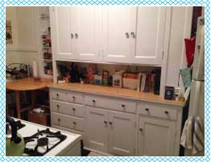
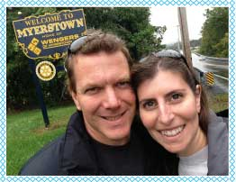

About Me
Hello! I’m Lisa. I am pretty much the embodiment of a cookie monster (minus the bright blue fur). I seriously love eating cookies, and every once in awhile get ambitious enough to bake them myself. Aside from December when I get to bake tons of cookies in my mom’s huge kitchen, I’m making due with our “cute little apartment” kitchen.
This is the apartment kitchen when mostly clean (ignore the bag of recyclables, and no, usually there isn’t that much countertop exposed).
Yup, all you’re missing in this picture is another foot or so of counter space next to the stove and between the sink. Needless to say, baking in my little space requires some creative thinking, and sometimes cutting corners.
If you can relate at all, then this site is for you. Hopefully you’ll get a chuckle out of some of my solutions, and if nothing else have some tasty cookies to get you through until tomorrow.
This is a picture of me with my fabulous husband, Steve. He indulges my crazy ideas more often than not (like when I added almost three additional hours onto an already 3 hour roadtrip to get a picture with this sign).